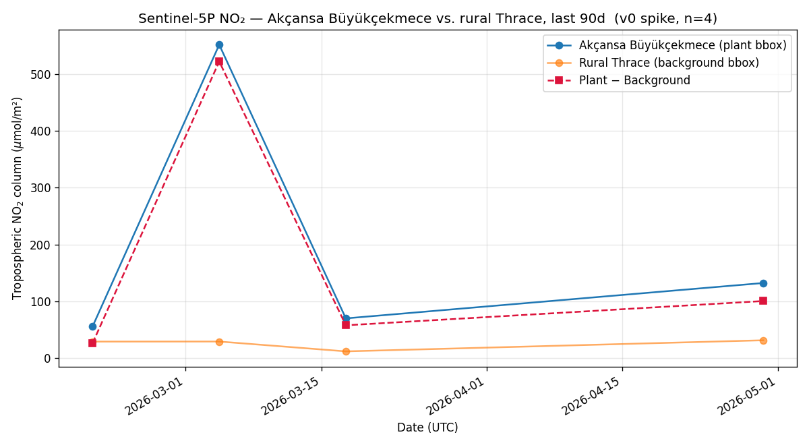

What the EU's Carbon Border Adjustment Mechanism will cost you starting 1 January 2026 — and what a verified declaration could save you instead.
From 1 January 2026, every ton of cement Akçansa ships to the EU will be hit with a CBAM levy of roughly €70–100 per ton of embedded CO₂. Because Türkiye has no verified domestic emissions data, the EU applies a punitive default value of 1.584 tCO₂ per ton of Portland cement — almost twice what a modern Turkish plant with clinker substitution actually emits.
On a single 10,000-ton quarterly shipment, that default costs Akçansa €1.27 million. With verified data, the same shipment costs €520,000. The €747,200 difference is what a verified declaration is worth — every quarter, on every shipment, for as long as cement leaves Büyükçekmece for Europe.
A draft CBAM Quarterly Report for Akçansa Büyükçekmece, generated by iz using free Sentinel-5P satellite data and a defensible cement-sector emission factor. The XML output validates against the European Commission's official CBAM schema (XSD v23.00, April 2025) and is included as an attachment.
Not yet an auditable submission. The figures are derived from a well-supported default (not direct plant metering), and the satellite record is 90 days of NO₂ as a combustion-intensity proxy — strong enough to demonstrate the signal, not strong enough to certify it. The production-grade version takes 6–8 weeks and is what we sell.
The Carbon Border Adjustment Mechanism is the EU's import tariff on the carbon embedded in steel, cement, aluminum, fertilizer, hydrogen and electricity from outside the bloc. The reporting period ran October 2023–end-2025 without payments. From Q1 2026 the definitive regime begins: EU importers must purchase and surrender CBAM certificates for every ton of embedded CO₂.
Türkiye is the EU's largest cement and clinker supplier and one of its top-three steel suppliers. Roughly €19 billion of Turkish exports — about 8% of total exports — fall within CBAM scope. Because Türkiye has no domestic verified-data infrastructure, the EU applies default values calibrated to penalise the absence of evidence.
For Portland cement (CN 25232900), the EU 2026 default specific embedded emissions are 1.584 tCO₂ per ton of cement. A modern Turkish plant with clinker substitution emits roughly 0.6–0.85 tCO₂/t. Default doubles your real number; the levy doubles your bill.
At a CBAM certificate price of €80/tCO₂ — the mid-point of current EU ETS futures — every 10,000 t of cement shipped at the EU default carries a tax bill of €1,267,200. A single quarter from a single coastal plant.
The EU lets you replace the punitive default with a verified actual value — provided the data comes from an installation-level Measurement, Reporting and Verification (MRV) stack the EU recognises. Until January 2026 there is no domestic Turkish MRV vendor of record. iz exists to fill that gap, using free satellite data and EU-format declarations that drop straight into the CBAM Registry.
Sentinel-5P TROPOMI is the EU's own atmospheric-monitoring satellite. It measures tropospheric NO₂ — the combustion fingerprint of clinker kilns — at 3.5 × 5.5 km native resolution, every day, for free. iz pulls the plant footprint, compares it to a rural-Thrace background, and turns the signal into an emission estimate calibrated against your production records.

90 days of L2 tropospheric NO₂ pulled via Microsoft Planetary Computer (no licence, no API key, free). QA-filtered at the TROPOMI standard threshold (qa ≥ 0.75). Spatial mean over a 10 km plant box, minus a paired rural background box on the same orbit pass.
Akçansa's published clinker output is converted to embedded CO₂ using a defensible specific factor of 0.65 tCO₂/t cement — benchmarked against the plant's CDP submissions and the EU's reference values for installations with active fly-ash clinker substitution. The satellite NO₂ trend serves as the independent activity sanity-check against the reported production curve.
Numbers are rendered into the official EU CBAM Quarterly Report XML format and validated against the European Commission's published XSD v23.00 (1 April 2025). The output is the same file an EU importer uploads to the CBAM Registry — ready to attach to a quarterly filing, ready to defend in an audit.
Below: a sample Q1 2026 shipment of 10,000 t Portland cement (CN 25232900) from Akçansa Büyükçekmece to a notional EU importer, priced at a €80/tCO₂ CBAM certificate.
| Line | Default basis | iz-verified basis | Difference |
|---|---|---|---|
| Cement shipped to EU (t) | 10,000 | 10,000 | — |
| Specific embedded direct emissions (tCO₂ / t) | 1.584 | 0.650 | −0.934 |
| Total embedded emissions (tCO₂) | 15,840 | 6,500 | −9,340 |
| CBAM certificate price (€ / tCO₂) | €80 | €80 | — |
| CBAM levy (€) | €1,267,200 | €520,000 | −€747,200 |
| Saved this quarter | — | — | €747,200 |
Akçansa exported approximately 1.2 Mt of cement and clinker to EU markets in recent years. At a steady-state shipment profile and the same factor spread, verified declarations would offset roughly €90 million per year of CBAM levy across all EU-bound product, against a six-figure annual MRV cost.
We take this v0 draft, calibrate the emission factor against your published clinker production for a single quarter, run the full plume-fitting pipeline on 90 days of S5P data, and deliver a verifier- reviewable Q1 2026 declaration ready for upload by your EU importers. €20,000 fixed fee.
Quarterly declarations for Büyükçekmece + Çanakkale + Ladik (Samsun) + the Ambarlı terminal, with monthly internal dashboards and year-end CDP-compatible reporting. €80,000 per plant per year.
Once your verified emission profile is on file, the gap below the EU default is a credit-eligible abatement that can be registered with Verra or Gold Standard and sold into the voluntary carbon market. iz originates, you keep the majority of credit revenue. Pricing on the origination side is success-based — we make money only when you do.
There is no incumbent Turkish CBAM MRV vendor. The EU Definitive Registry opens for filing the same quarter your Phase 01 pilot would complete. The twelve months from Q1 2026 to Q4 2026 are the only window in which being first matters. After that, every cement producer in Türkiye will have a vendor of record. We would rather it be us, with you as the first logo.